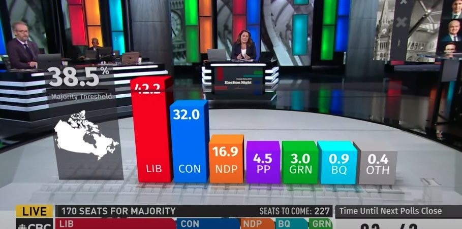
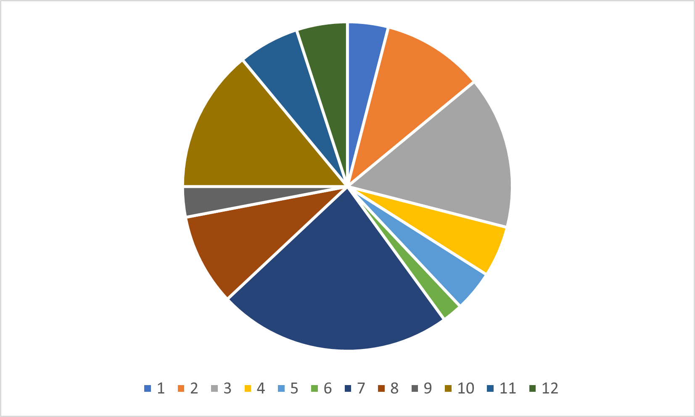
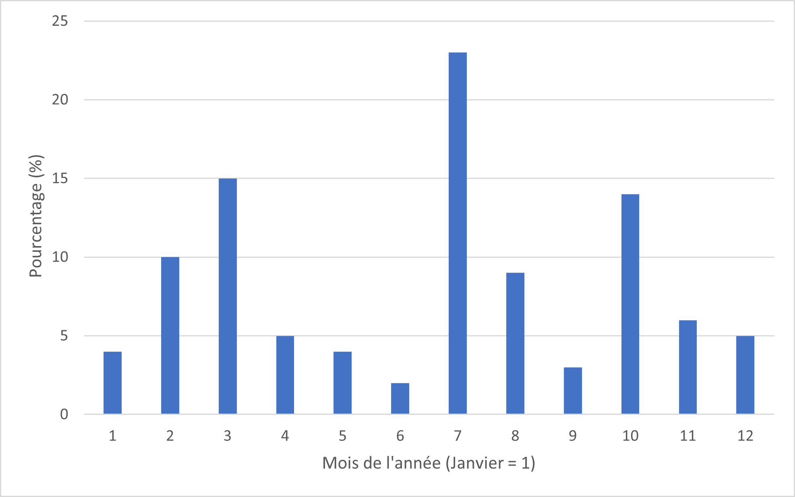

Les variables qualitatives sont un type de variables pour lesquelles les modalités ne sont pas des nombres, mais plutôt des catégories. On retrouvera souvent parmi ces variables le sexe, la couleur, le niveau de satisfaction, etc. Elles se déclinent en deux catégories, soit les variables qualitatives nominales et ordinales. Pour synthétiser visuellement l’information d’une variable qualitative, on utilise principalement un tableau de fréquences ainsi qu’un diagramme circulaire ou un diagramme à bandes.
Créer les tableaux croisés dynamiques nécessaire pour le laboratoire
Quelque chose d’autre
On continue de travailler à l’aide de la base de données du laboratoire d’introduction 1. Le but de ce prélab est d’utiliser les connaissances et outils acquis dans le premier laboratoire afin de préparer une feuille de calcul qui servira lors du prochain laboratoire.
1.
Dans le fichier Excel du laboratoire, créer une nouvelle feuille de calcul. Dans celle-ci, créer le tableau croisé dynamique pour la variable Obésité.
2.
Considérer les situations suivantes. Quelle(s) critique(s) peut on poser à leur égard?
(a)
Cette marque de dentifrice est recommandée par \(80\%\) des dentistes qui l’utilisent.
(b)
Il y a \(200\) utilisateurs d’un produit \(A\) qui ont acheté à nouveau contre \(50\) pour un produit compétitif \(B\text{.}\) Le produit \(A\) est donc supérieur au produit \(B\text{.}\)
3.
Considérer les graphiques suivants. Expliquer en quoi l’information est trompeuse.

Figure2.1.1.Diagramme à bandes des résultats de l’élection fédérale de 2021Figure2.1.2.Diagramme circulaire à propos de la consommation de cannabis des américains
4.
Lequel des graphiques suivants semble le plus adéquat pour illustrer l’information? Dire pourquoi.

Figure2.1.3.Répartition en pourcentage des élèves d’une classe de statistiques selon leur mois de naissance

Figure2.1.4.Répartition en pourcentage des élèves d’une classe de statistiques selon leur mois de naissance